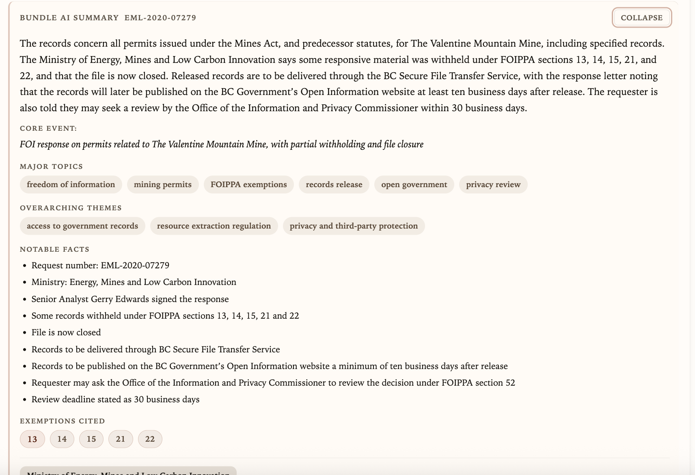
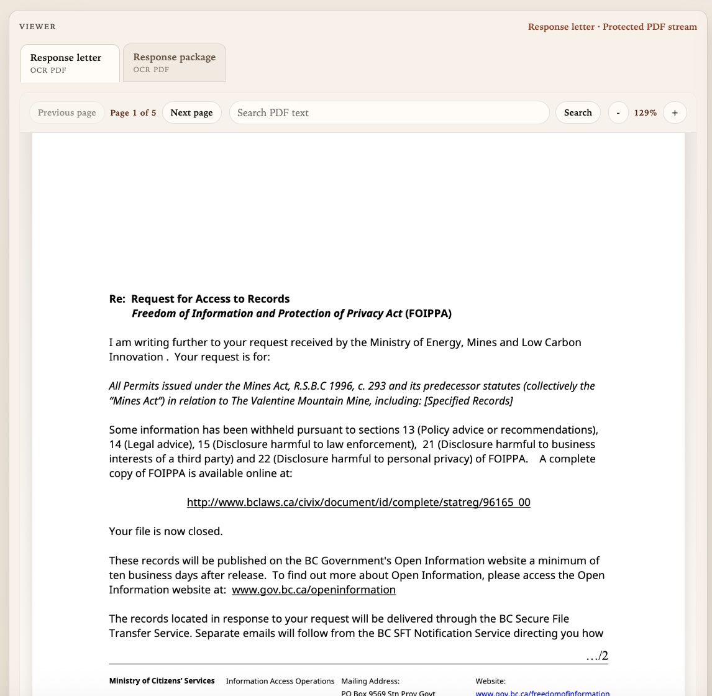

Case Study · Project Architecture
TransparencyBC:
Architecture & Engineering Walkthrough
A technical breakdown of a public-records search platform: decoupling a Python/Flask search API, chunked Typesense indexing, structured document summaries, and signed document streaming for British Columbia FOI disclosures.
01 / The Problem
Government disclosures distributed across unindexed scans
British Columbia government Freedom of Information (FOI) releases, Office of the Information and Privacy Commissioner (OIPC) orders, and judicial reviews contain important public records. However, records are published across separate portals as scanned, multi-page PDFs with varying visual quality and no centralized full-text search index.
Researchers and journalists frequently need to locate specific topics or cited statutory exemptions—such as FOIPPA Section 13 (policy advice), Section 14 (legal advice), Section 15 (law enforcement), Section 21 (third-party business interests), or Section 22 (personal privacy). Without centralized search, discovering relevant files required manually checking disclosure logs, downloading separate bundles, and reviewing pages by hand.
TransparencyBC was designed to address this workflow: an ingestion and OCR pipeline, a dedicated search API backed by Typesense and PostgreSQL, structured document summaries, and a web-based PDF viewer.
02 / Architecture & Data Flow
Decoupled search microservice and chunked indexing
To isolate search queries from batch scraping and OCR workloads, the system separates background data ingestion from the user-facing search API:
Ingestion & OCR (Private)
Scrapers poll disclosure logs, retrieve release packages, and run OCR normalization to extract text and record metadata.
Search Service API
Standalone Flask service (search_service_api) querying Typesense for chunk-level text matching and PostgreSQL for document records and metadata.
Next.js Application
Web frontend with API proxy routes, account authentication, structured document summaries, and signed PDF document streaming.
Data flow lifecycle:
- Ingestion: Scrapers collect release packages and record metadata (request number, ministry, date, exemptions cited).
- Chunking & Indexing: Document text is segmented into searchable chunks in Typesense (bundle collection and response-package scope) so full-text queries match indexed chunks rather than reading multi-megabyte PDFs at request time.
- API Proxying: Next.js backend routes (
/api/searchand/api/search-preview) forward requests tosearch_service_api, passing internal authentication headers and isolating backend credentials. - Signed Document Streaming: Document viewing routes verify access and stream PDF files with time-limited HMAC signatures and
no-storecache headers instead of exposing static public storage links.
03 / Interface Walkthrough
Screenshots from the project
Below are static screenshots captured from the project interface, illustrating the search desk, structured document summary, and PDF viewer.

The Search Desk interface provides text search across BC Gov FOI releases, OIPC orders, and judicial reviews. Controls include source filtering, date ranges (From / To), and saved search tags (such as housing, contractor, and site c).

Summary view for FOI request EML-2020-07279 (Ministry of Energy, Mines and Low Carbon Innovation regarding Valentine Mountain Mine permits). Displays extracted metadata including core event, major topics, overarching themes, notable facts, and cited FOIPPA statutory exemptions (Sections 13, 14, 15, 21, and 22).

Document viewer displaying page 1 of 5 of an official FOIPPA response package. Features tabbed navigation between response letter and package, page navigation, zoom controls, and in-document text search across OCR text.
04 / Engineering Decisions
Architectural trade-offs & implementation choices
1. Decoupled Search API vs. Ingestion Workload
Decision: Separated search_service_api into an independent Flask service, distinct from scraper and OCR tasks.
Tradeoff: Scraper tasks and OCR processing incur heavy CPU and disk I/O. Decoupling search API execution isolates resource contention so background ingestion does not directly tie up web query processes.
2. Chunk-Based Full-Text Indexing
Decision: Rather than indexing entire 200-page release packages as single monolithic documents, text is split into granular chunks stored in Typesense.
Tradeoff: Chunked indexing enables snippet highlighting and avoids reading or parsing full PDF files during search queries, keeping index memory usage predictable.
3. Signed PDF Streaming Routes
Decision: PDFs are streamed through backend routes using HMAC-signed tokens rather than exposing direct public storage links.
Tradeoff: Public storage links bypass application-level access controls and allow unauthenticated scraping. Signed streaming routes verify session permissions and prevent unauthenticated direct file access.
4. PostgreSQL State Separation
Decision: Maintained separate PostgreSQL databases for corpus metadata and user application state.
Tradeoff: Avoids SQLite concurrency locking under web queries and isolates schema changes between document corpus records and user account data.